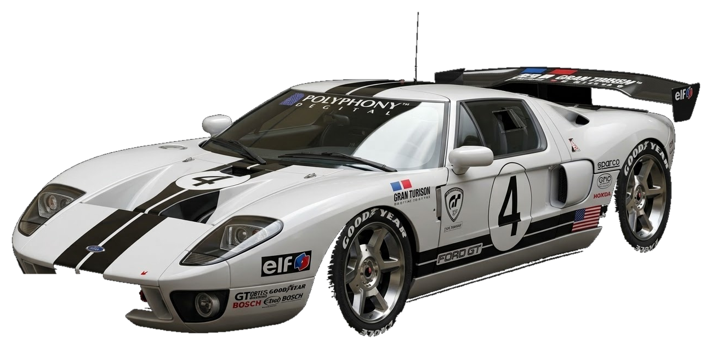
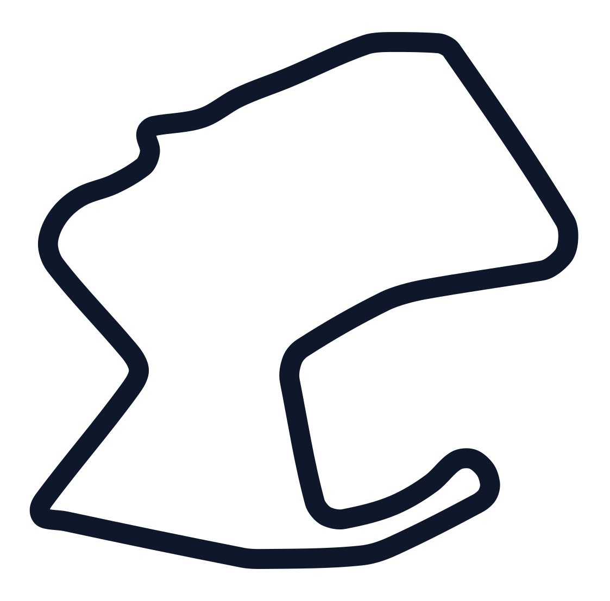
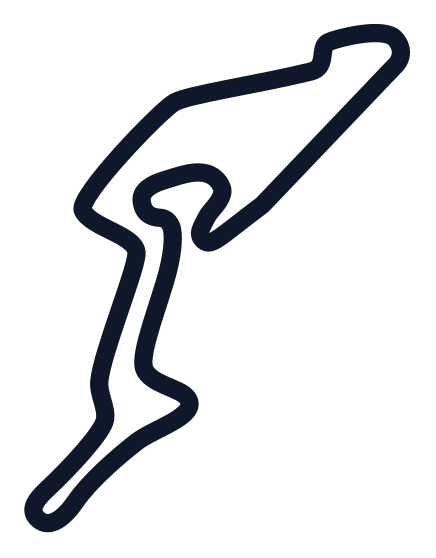
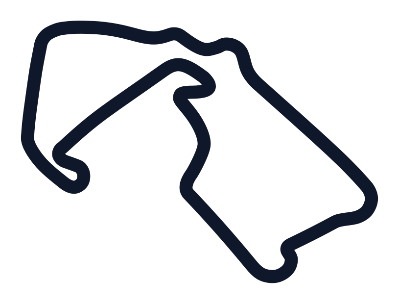
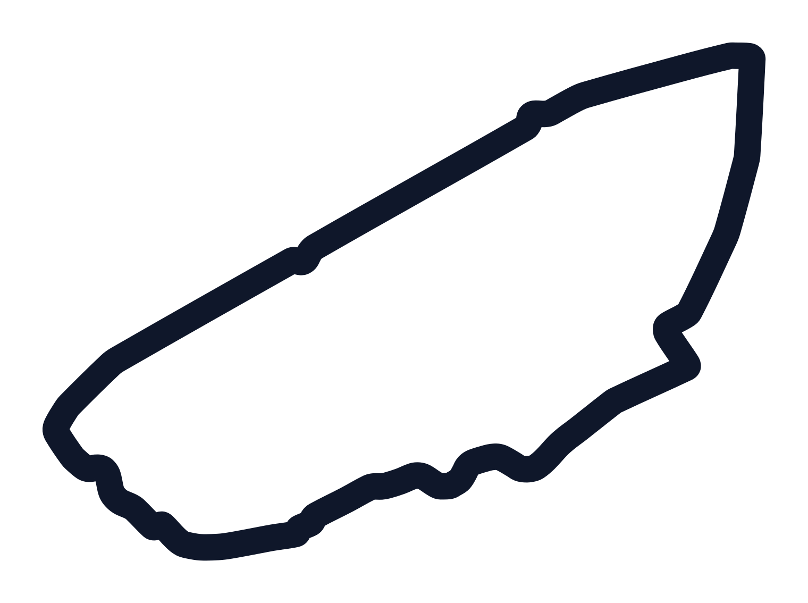

El campeonato definitivo de simracing en PlayStation 3. Competencia en salas privadas online, paridad técnica estricta con balance por PR 550 y telemetría de tiempos inspirada en el FIA World Endurance Championship.
Diseñado para simracers de PlayStation 3 que buscan máxima igualdad mecánica y deportividad absoluta.
Eliminamos las categorías artificiales de bronce o plata. Cada piloto entra a la pista con su PSN ID y su propia habilidad al volante; el respeto y la reputación se forjan curva a curva con podios y constancia.
Regulación estricta en sala por Puntos de Rendimiento (PR), compuestos de neumáticos oficiales y prohibición de ayudas artificiales (TCS=0, sin ayudas de frenada; solo ABS=1 permitido). Lo único que marca la diferencia son tus manos.
Resultados oficiales de sala, diferencias de tiempo milimétricas, registro de vueltas rápidas, poles y palmarés histórico actualizado directamente en base de datos tras cada bandera a cuadros.
Desde trazados legendarios de la Fórmula 1 y las 24 Horas de Le Mans hasta los circuitos clásicos originales de Gran Turismo en PS3.




Consulta las tarjetas oficiales de piloto con sus autos insignia de Gran Turismo 6, estadísticas de carrera, podios y palmarés acumulado.
Página creada para la comunidad de Gran Turismo 6 (PS3) por Ricardo Polanco